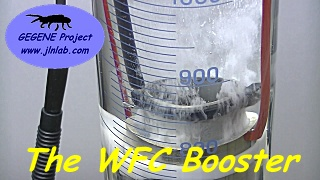
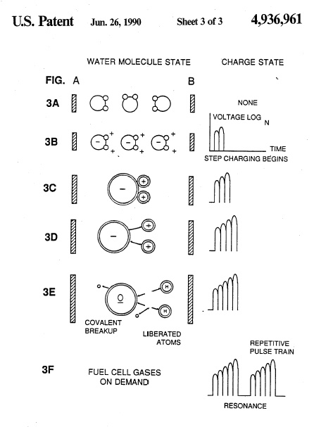
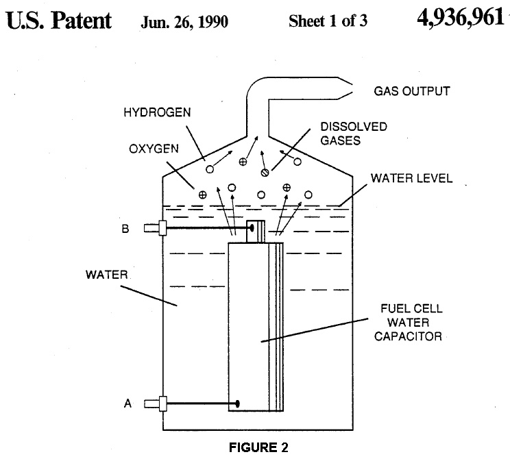
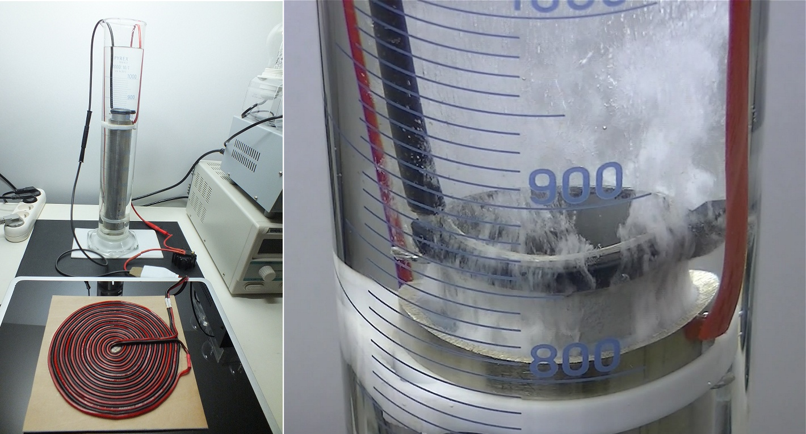

Click here for the ENGLISH VERSION 
Ceci est la suite du projet GEGENE qui consiste à utiliser les caractéristiques intéressantes d'une bobine plate bifilaire de Tesla associée à une plaque à induction comme générateur Haute Fréquence de forte puissance. La grande particularité de ce GEGENE, c'est qu'il utilise une BOBINE BIFILAIRE PLATE DE TESLA (Pancake Coil, Bifilar Coil) comme décrite dans son brevet N° 512,340 déposé en 1894. Dans le GEGENE cette bobine bifilaire plate est couplée électromagnétiquement avec la bobine plate de la plaque à induction et sert de secondaire. Le pilotage et le contrôle de la puissance produite en sortie sont entièrement réalisés par l'électronique de la plaque à induction. Donc ici, pas besoin de générateur de fonctions programmable ou de matériel de laboratoire. Il suffit simplement d'avoir : une plaque à induction (à moins de 50€), du fil double (type Haut-Parleur ou cable souple secteur), quelques sucres d'électriciens et une prise multiple...
Présentation du projet WFC Booster
Le but du WFC Booster est d'essayer de produire de manière efficace un mélange de type HHO (mélange en proportions stoechiométriques de di-hydrogène et de di-oxygène) en vue de produire un carburant alternatif. Le procédé utilise ici le principe de la WFC (Water Fuel Cell) inventé par Stanley Meyer en 1990 et qui consiste à casser la molécule d'eau par élongation paramétrique de la liaison Oxygène-Hydrogène. Cette élongation paramétrique de la molécule d'eau est effectuée, selon le principe de Stanley Meyer, grâce à l'utilisation d'impulsions Haute Tension très brèves et à Haute Fréquence appliquées aux bornes d'un condensateur cylindrique immergé dans de l'eau. La grande particularité de la WFC de Stanley Meyer est qu'elle utilise de l'eau du robinet ordinaire et sans aucun ajout d'électrolyte comme un électrolyseur classique. Voici un extrait du brevet initial de Stanley Meyer et qui montre le principe de fonctionnement de sa cellule :
 

| TEST-S02EP01 : L'expérience "proof of concept" du WFC Booster avec le GEGENE |
| TEST-S02EP02 : Réplications REUSSIES du générateur HHO et de la WFC par WOOPY |
| TEST-S02EP03 : Test de la cellule WFC avec de l'EAU PURE OSMOSEE et le GEGENE v3 |
| TEST-S02EP04 : Mesures électriques sur la Cellule WFC avec de l'EAU PURE OSMOSEE... |
| TEST-S02EP05 : Test de la Cellule WFC avec le signal VIC de Stanley Meyer... |
| TEST-S02EP06 : Amélioration du signal paramétrique de la cellule WFC |
Voici donc une vidéo des essais complets du WFC Booster
Voici donc une vidéo rapprochée du WFC Booster en Action
Liens et références:
Email: jnaudin509@aol.com
retour au sommaire de GEGENE